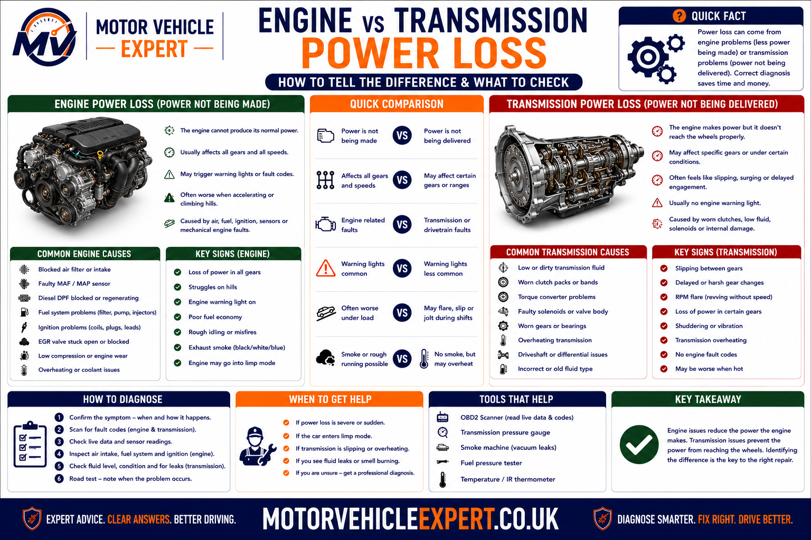
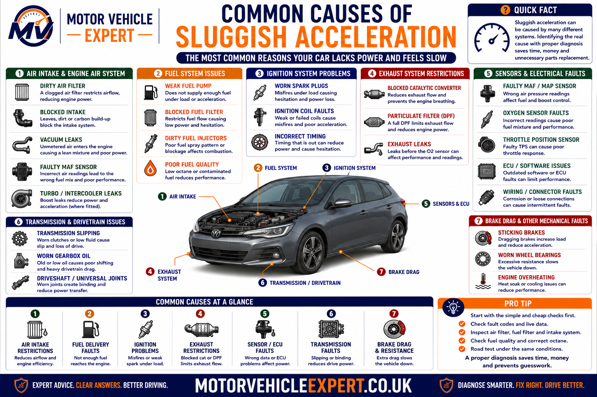
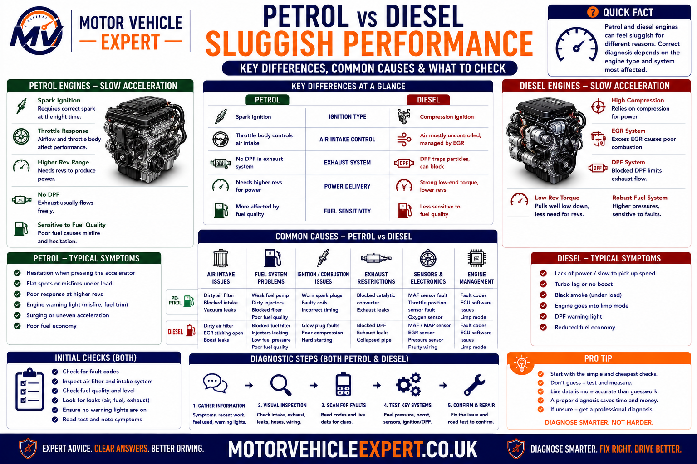
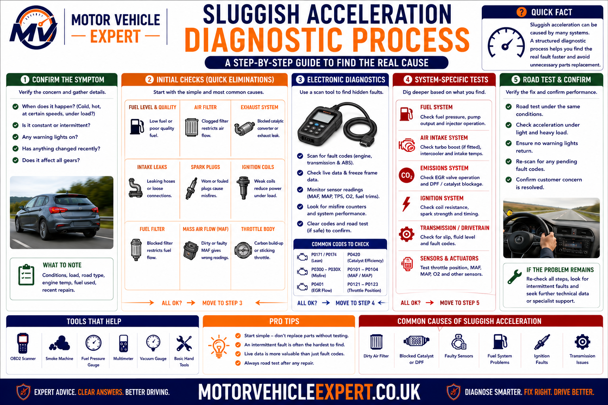
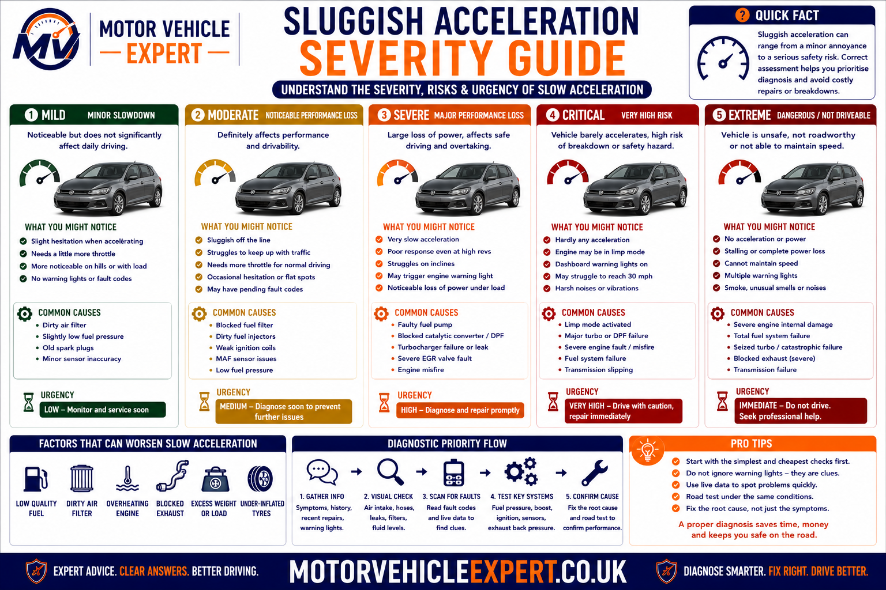
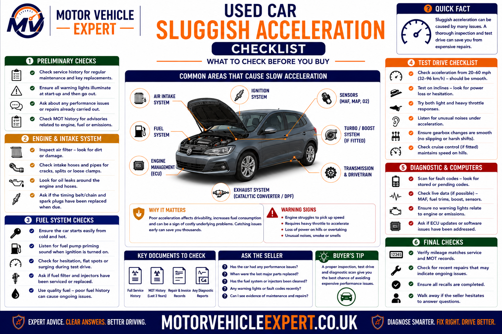
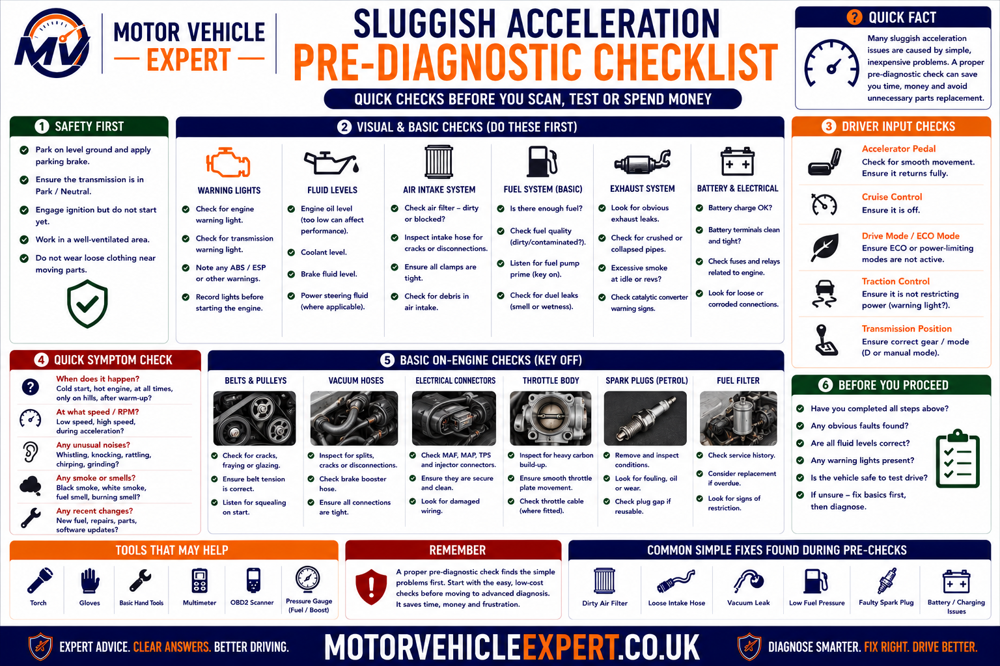

Why Does a Car Feel Slow to Accelerate?
A car usually feels slow to accelerate because the engine is not producing its normal power, the transmission is not transferring that power correctly or excessive resistance is making the vehicle harder to move.
Common causes include restricted airflow, weak fuel delivery, ignition misfires, low turbo boost, incorrect sensor readings, catalytic-converter or DPF restriction, clutch slip, automatic transmission faults, dragging brakes, low tyre pressure and overdue servicing.
Engine Output Problem
The engine may not be receiving enough air or fuel, may be misfiring, or may be operating with reduced boost pressure.
Power-Transfer Problem
The engine may produce power normally, but a slipping clutch or transmission fault prevents it reaching the wheels efficiently.
Excessive Resistance
Dragging brakes, underinflated tyres or mechanical binding can make the vehicle feel heavy even when the engine is healthy.
The most useful clue is not simply that the car feels slow. Note whether the engine revs normally, whether the fault is worse uphill, whether warning lights are present and whether the sluggishness appeared suddenly or gradually.
What Does Slow Acceleration Actually Mean?
Slow acceleration means the vehicle takes longer than expected to increase road speed after the accelerator is pressed. The engine may feel flat, the throttle may feel unresponsive or the vehicle may struggle more than usual when climbing hills, joining a motorway or overtaking.
Sluggish acceleration is not one specific fault. The driver feels the final result of a problem somewhere between the accelerator pedal, engine, transmission, drivetrain, tyres and road surface.
1. Driver Input
The accelerator pedal requests more torque from the engine-management system.
2. Engine Response
The engine must receive the correct air, fuel and ignition or injection control to produce additional power.
3. Power Transfer
The clutch, torque converter or transmission must transfer the engine’s output into the drivetrain.
4. Vehicle Movement
The wheels must turn freely without excessive brake drag, mechanical resistance or tyre-related losses.
Gradual Sluggishness
Often linked to overdue servicing, filter restriction, sensor drift, DPF loading, clutch wear or slowly deteriorating boost performance.
Sudden Power Reduction
More likely to involve limp mode, a split boost hose, ignition failure, fuel-pressure loss, transmission protection or a serious electronic fault.
Intermittent Sluggishness
May point towards loose wiring, sensor faults, sticking valves, heat-related problems or inconsistent fuel and boost control.
Vehicle size, engine power and gearbox design affect how quickly a car accelerates. The concern is most meaningful when the same vehicle has become noticeably slower than it was previously.
Common Symptoms of Sluggish Acceleration
Slow acceleration rarely appears alone. Associated noises, warning lights, smoke, engine behaviour and transmission response provide important clues about the underlying system.
Flat Throttle Response
The accelerator is pressed but the engine responds slowly or produces less power than expected.
Weak Pulling Power
The car struggles when climbing hills, carrying passengers or accelerating in higher gears.
High Revs, Little Speed
Engine speed rises without matching road speed, suggesting clutch or transmission slip.
Hesitation or Flat Spots
The vehicle pauses, stumbles or briefly loses response before accelerating.
Engine Management Light
A warning light may indicate ignition, boost, sensor, fuel, emissions or transmission faults.
Limp Mode
Engine or transmission output may be deliberately restricted to protect the vehicle after a fault is detected.
Black Smoke
Often indicates excessive fuel, insufficient air, boost loss or poor diesel combustion.
Misfiring or Shaking
Uneven combustion reduces engine output and can make acceleration rough as well as slow.
Increased Fuel Consumption
Sensor faults, misfires, brake drag and poor combustion can reduce performance while increasing fuel use.
A naturally low-powered vehicle may accelerate slowly by design. A sudden or progressive reduction from its previous performance usually indicates a fault that should be investigated.
When Does the Car Feel Slow?
The conditions in which the problem appears can help separate fuel, airflow, boost, ignition and transmission faults before parts are replaced.
Worst Uphill
Hill climbing increases load and often exposes weak fuel delivery, low boost, clutch slip or exhaust restriction.
Worst at Motorway Speed
High-load sluggishness may indicate fuel restriction, boost loss, airflow faults, DPF loading or transmission problems.
Worst When Cold
Cold-start fuelling, ignition weakness, glow-plug faults, sensor errors or mechanical friction may be involved.
Worst When Hot
Heat-related sensor faults, weak fuel pumps, ignition coils, transmission slip or overheating components may become worse.
Only Under Hard Acceleration
Maximum load can expose low fuel pressure, spark breakdown, split boost pipes or clutch slip.
Only After Warning Light Appears
The engine or transmission may have entered a reduced-power protection mode.
| Symptom pattern | Likely systems | Useful next check |
|---|---|---|
| Revs rise but speed does not | Clutch or transmission | Road test under load and inspect power transfer |
| Weak uphill with normal revs | Fuel, boost, airflow or exhaust | Compare live data and pressure readings under load |
| Sluggish with shaking | Ignition, injection or compression | Check fault codes and misfire counters |
| Sluggish with black smoke | Boost, airflow, EGR or fuelling | Inspect intake hoses and compare airflow data |
| Sluggish with one hot wheel | Dragging brake | Inspect caliper, hose and parking-brake mechanism |
| Power returns after restarting | Limp mode or electronic control fault | Read stored codes before clearing them |
Engine Power Loss or Transmission Power-Transfer Fault?
The first major diagnostic decision is whether the engine is failing to produce power or whether the drivetrain is failing to transfer otherwise normal engine power to the wheels.

Engine faults usually prevent the engine building power, while clutch and transmission faults allow the engine to rev without converting that output into normal road speed.
More Likely Engine Related
- ✓ Engine struggles to gain revs.
- ✓ Misfiring or shaking is present.
- ✓ Smoke appears under acceleration.
- ✓ Boost pressure is low.
- ✓ Engine warning light is illuminated.
- ✓ Fuel economy has deteriorated.
More Likely Transmission Related
- ✓ Revs flare without matching road speed.
- ✓ Slip is worse in higher gears.
- ✓ Gear changes are delayed or harsh.
- ✓ A burning clutch smell is present.
- ✓ Transmission warning appears.
- ✓ Drive engagement is delayed.
If both rise slowly, the engine may be underperforming. If engine speed rises quickly while road speed barely changes, power transfer through the clutch or transmission requires attention.
What Commonly Makes a Car Feel Slow to Accelerate?
Sluggish acceleration can originate from the engine, intake, fuelling, ignition, turbocharger, emissions system, transmission or wheel-end components. Diagnosis should begin with the symptom pattern rather than the most expensive possible part.

Several different faults can produce the same driver complaint, which is why pressure testing, live data and road-test evidence are more reliable than guessing.
Restricted Airflow
A blocked air filter, collapsed intake hose or restricted throttle body can reduce the air available for combustion.
Weak Fuel Delivery
A restricted filter, weak pump, pressure fault or injector problem can limit fuel supply under load.
Ignition Misfire
Worn spark plugs, weak coils or electrical faults can prevent one or more cylinders producing normal power.
Low Turbo Boost
Split hoses, intercooler leaks, actuator faults or turbocharger damage can reduce boost pressure.
Incorrect Sensor Data
MAF, MAP, throttle, oxygen, temperature and pressure sensors can cause poor control decisions when readings are inaccurate.
Exhaust Restriction
A blocked catalytic converter or DPF can create excessive backpressure and reduce engine breathing.
Clutch Slip
A worn clutch can allow engine speed to rise without sending the expected torque through the gearbox.
Transmission Fault
Low hydraulic pressure, internal wear or control problems can cause automatic transmission slip or delayed engagement.
Dragging Brakes or Tyres
Brake binding, low tyre pressure or unsuitable tyres can increase the effort required to move the vehicle.
A poorly serviced vehicle may have a restricted filter, ageing sensors and a partially blocked emissions system at the same time. Correct diagnosis should identify the faults that are actually reducing performance rather than replacing every possible component.
Air-Intake Problems That Reduce Acceleration
An engine can only produce normal power when it receives the correct amount of clean, measured air. Restrictions, leaks and inaccurate airflow data can all make the engine feel flat.
Blocked Air Filter
A heavily contaminated filter limits airflow and may gradually reduce acceleration and fuel economy.
Collapsed Intake Hose
A weakened hose can deform under high airflow demand and temporarily restrict the engine.
Dirty Throttle Body
Deposits around the throttle plate can affect airflow and throttle response, particularly at lower openings.
Unmetered Air Leak
Split vacuum or intake hoses can allow air to enter without being measured correctly.
Intercooler Restriction
Internal contamination or external blockage can reduce cooling and airflow on turbocharged vehicles.
Intake Manifold Fault
Carbon buildup, swirl-flap faults or damaged manifold controls can reduce airflow distribution.
A mass airflow sensor may report low airflow because the engine genuinely has restricted airflow. Check the filter, hoses, throttle and intake path before assuming the sensor itself has failed.
Fuel-System Faults That Cause Weak Acceleration
Fuel demand increases sharply during acceleration. A vehicle may idle normally but feel weak under load if the fuel system cannot maintain the required pressure or flow.
Restricted Fuel Filter
A blocked filter reduces flow and often becomes most noticeable uphill or at higher speed.
Weak Fuel Pump
A worn pump may produce adequate pressure at idle but fail to maintain supply under acceleration.
Fuel-Pressure Control Fault
Regulators, control valves and pressure sensors can cause low or unstable pressure.
Injector Fault
Restricted, leaking or electrically faulty injectors can reduce cylinder output and disturb combustion.
Contaminated Fuel
Water, incorrect fuel or debris can affect pressure, injection quality and engine performance.
Low-Pressure Supply Fault
Diesel high-pressure systems still rely on a healthy supply from the tank and low-pressure pump.
1. Check Service History
Confirm when the fuel filter was last replaced and whether the correct part was fitted.
2. Compare Pressure
Compare requested and actual fuel pressure during the condition in which the fault occurs.
3. Check Injector Data
Review misfire information, correction values and electrical operation where available.
4. Confirm Repair
Repeat the loaded road test and verify that pressure remains stable.
A fuel system can appear healthy while the vehicle is stationary but fail when demand increases. Diagnosis should reproduce the actual acceleration complaint safely.
Ignition Faults and Misfires
Petrol engines rely on a strong, correctly timed spark in every cylinder. Ignition faults often become most noticeable under acceleration because cylinder pressure rises and the spark has to work harder to ignite the mixture.
Worn Spark Plugs
Excessive plug gap, deposits or worn electrodes can cause weak ignition under load.
Weak Ignition Coil
A coil may work at idle but break down during harder acceleration or when hot.
Damaged Wiring or Connector
Loose terminals, oil contamination or damaged wiring can create intermittent ignition faults.
Injector Misfire
A fuel injector fault can imitate an ignition problem by preventing one cylinder contributing normal power.
Compression Loss
Valve, piston or head-gasket faults can cause persistent misfiring and weak acceleration.
Incorrect Timing
Mechanical or electronic timing faults can significantly reduce engine output.
Unburnt fuel can overheat and damage the catalytic converter. A flashing engine-management light, strong shaking or obvious misfire under load requires urgent attention.
Turbocharger and Boost Faults
Turbocharged engines rely on pressurised intake air to produce additional torque. When actual boost pressure is lower than the engine-management system expects, the vehicle may feel flat, especially during overtaking, hill climbing or motorway acceleration.
Split Boost Hose
A cracked or detached hose allows compressed air to escape, often causing hissing, poor acceleration and black smoke on a diesel.
Leaking Intercooler
Cracks, damaged end tanks or loose connections can reduce boost pressure and allow oil mist to collect around the leak.
Turbo Actuator Fault
A vacuum, electronic or mechanical actuator fault can prevent the turbocharger controlling boost correctly.
Boost-Control Solenoid
A failed control valve or damaged vacuum hose can cause low, unstable or excessive boost pressure.
Variable-Vane Sticking
Carbon deposits can restrict movement inside a variable geometry turbocharger, reducing response or triggering limp mode.
Turbocharger Wear
Bearing wear, damaged compressor blades or oil-supply problems can reduce boost and may produce smoke, noise or oil consumption.
Common Low-Boost Symptoms
- ✓ Weak pull once the turbo should be active.
- ✓ Hissing or rushing-air noise.
- ✓ Black smoke under acceleration.
- ✓ Underboost fault code.
- ✓ Oil mist around boost-pipe joints.
- ✓ Power returns after restarting.
Professional Boost Checks
- ✓ Compare requested and actual boost.
- ✓ Pressure-test the intake system.
- ✓ Inspect vacuum supply and control valves.
- ✓ Check actuator movement.
- ✓ Inspect compressor and turbine condition.
- ✓ Confirm oil feed and return condition.
Split hoses, leaking intercoolers, vacuum faults, stuck control mechanisms and incorrect sensor readings can all reduce boost. The complete control system should be tested before replacing the turbocharger.
Sensor and Engine-Management Faults
The engine control unit calculates fuel delivery, ignition timing, throttle position, boost pressure and emissions control from sensor information. Incorrect data can make the engine feel sluggish even when the main mechanical components remain serviceable.
Mass Airflow Sensor
Incorrect airflow readings can reduce fuelling accuracy, throttle response and turbocharger control.
Manifold Pressure Sensor
A contaminated or inaccurate MAP sensor can affect load and boost calculations.
Throttle Position Sensor
An inconsistent pedal or throttle signal can cause delayed response or reduced-power operation.
Oxygen Sensor
Incorrect lambda information may lead to poor fuel control, higher consumption and weak performance.
Coolant-Temperature Sensor
Implausible temperature readings can cause incorrect fuelling, fan operation and cold-start behaviour.
Crank or Cam Sensor
Weak or intermittent position signals can disturb injection, ignition timing and engine speed recognition.
1. Read Fault Codes
Stored and pending codes identify systems requiring further investigation.
2. Check Live Data
Compare sensor readings with expected values under the same operating conditions.
3. Test Wiring
Confirm power supply, earth, signal integrity and connector condition.
4. Verify the Repair
Repeat the road test and confirm that the corrected data matches the restored performance.
Low airflow may be caused by a blocked filter, boost leak, exhaust restriction or genuine sensor fault. Diagnosis should confirm why the reading is incorrect before a sensor is replaced.
Catalytic Converter, DPF and Exhaust Restrictions
The engine must release exhaust gases as efficiently as it draws in fresh air. A restricted catalytic converter, diesel particulate filter or damaged exhaust component can create excessive backpressure and prevent normal power production.
Blocked Catalytic Converter
A melted, collapsed or contaminated catalyst can restrict gas flow and make the engine increasingly weak as revs rise.
Restricted DPF
Excessive soot or ash loading can increase backpressure and trigger reduced-power operation.
Collapsed Silencer
Internal baffles or damaged material can obstruct the exhaust even when the outside casing appears intact.
Damaged Exhaust Pipe
A crushed or internally collapsed pipe can reduce exhaust flow following impact damage.
DPF Pressure-Sensor Fault
Blocked pipes or inaccurate pressure readings can cause incorrect loading calculations and unnecessary limp mode.
Failed Regeneration
Repeated interrupted regeneration can allow soot loading to increase until performance is restricted.
| Restriction type | Typical symptoms | Useful test |
|---|---|---|
| Catalytic-converter restriction | Power reduces as engine speed rises | Backpressure, vacuum and temperature checks |
| DPF restriction | Warning light, limp mode and poor diesel performance | Differential pressure and soot-loading data |
| Collapsed exhaust section | Sudden or progressive loss of high-load power | Physical inspection and pressure testing |
| Faulty pressure-sensor pipes | Incorrect DPF loading or regeneration faults | Inspect pipes and compare pressure plausibility |
Misfires, oil burning, injector faults, turbocharger problems and repeated short journeys can damage or overload catalysts and DPFs. Replacing or cleaning the component without correcting the cause risks repeat failure.
Clutch and Transmission Faults
The engine can produce normal power while the vehicle still accelerates poorly if the clutch or transmission cannot transfer that torque efficiently to the wheels.
Manual Clutch Slip
A worn clutch allows engine speed to rise without matching road speed, especially in higher gears or uphill.
Automatic Transmission Slip
Internal wear, hydraulic-pressure loss or control faults can cause rev flare and delayed acceleration.
Torque Converter Fault
Poor torque multiplication or lock-up problems can create weak response, shudder or excessive engine speed.
Dual-Clutch Wear
Worn clutch packs or actuator faults can cause hesitation, slipping, harsh engagement or reduced performance.
CVT Fault
Belt, pulley, fluid-pressure or control problems can cause unusual rev behaviour and weak acceleration.
Transmission Protection Mode
The gearbox may hold one gear or restrict torque after detecting overheating, pressure loss or an electrical fault.
Clutch-Slip Clues
- ✓ Revs flare in higher gears.
- ✓ Slip is worse uphill.
- ✓ Burning smell after acceleration.
- ✓ Bite point feels unusually high.
- ✓ Road speed does not match engine speed.
Automatic-Gearbox Clues
- ✓ Delayed selection of drive or reverse.
- ✓ Harsh or delayed gear changes.
- ✓ Revs rise between shifts.
- ✓ Transmission warning light.
- ✓ Fluid leak or overheating smell.
Continued hard acceleration can overheat and damage clutch friction material or automatic transmission components. A controlled professional road test is safer and more informative.
Dragging Brakes, Tyres and Mechanical Resistance
Not every sluggish vehicle has an engine or gearbox fault. Additional resistance at the wheels can make the car feel heavy, reduce fuel economy and place extra load on the powertrain.
Sticking Brake Caliper
A seized piston or slide mechanism can keep one brake applied after the pedal is released.
Restricted Brake Hose
Internal hose damage can trap hydraulic pressure and prevent a caliper releasing properly.
Parking-Brake Binding
Seized cables, mechanisms or electronic actuators can keep the rear brakes partially applied.
Low Tyre Pressure
Underinflated tyres increase rolling resistance and can make acceleration and fuel economy noticeably worse.
Incorrect Tyres
Oversized, unsuitable or heavily worn tyres can alter gearing, grip and rolling resistance.
Wheel-Bearing Damage
Severe bearing wear can create noise, heat and mechanical resistance.
One wheel that is substantially hotter than the others may indicate brake drag. Do not touch brake components directly, because discs and calipers can cause serious burns.
Petrol and Diesel Sluggish Acceleration Compared
Petrol and diesel engines share many possible causes of sluggish acceleration, but their ignition, boost, fuelling and emissions systems create different diagnostic priorities.

Petrol diagnosis often focuses on ignition quality, fuelling and catalyst performance, while diesel diagnosis places greater emphasis on boost, injectors, EGR operation and DPF loading.
Common Petrol Causes
- ✓ Worn spark plugs.
- ✓ Weak ignition coils.
- ✓ MAF or oxygen-sensor faults.
- ✓ Throttle-body contamination.
- ✓ Low fuel pressure.
- ✓ Catalytic-converter restriction.
Common Diesel Causes
- ✓ Split boost hoses.
- ✓ Turbocharger-control faults.
- ✓ EGR valve sticking.
- ✓ Injector or fuel-pressure faults.
- ✓ DPF restriction.
- ✓ Limp mode.
| Diagnostic area | Petrol vehicle | Diesel vehicle |
|---|---|---|
| Combustion control | Spark plugs, coils and fuel mixture | Injection quality, compression and glow support |
| Air and boost | Throttle, MAF, intake leaks and turbo where fitted | Boost hoses, intercooler, turbo and airflow control |
| Emissions restriction | Catalytic converter | DPF, catalyst and EGR system |
| Common visible clue | Misfire, poor idle or warning light | Black smoke, soot, limp mode or DPF warning |
| Useful live data | Fuel trims, oxygen sensors and misfire counts | Boost, rail pressure, airflow and DPF pressure |
How a Professional Garage Diagnoses Sluggish Acceleration
Effective diagnosis begins by reproducing the fault safely and determining whether the engine, transmission or wheel systems are responsible. Codes and live data should support mechanical testing, not replace it.

A structured workflow identifies the system at fault before parts are replaced and ensures the final repair restores performance under real driving load.
1. Confirm the Complaint
Establish when the vehicle feels slow and whether the symptom is gradual, sudden or intermittent.
2. Check Warning Lights
Record all engine, transmission, DPF and stability warnings before clearing codes.
3. Inspect Service Condition
Check oil level, filters, plugs, hoses, fluid condition, tyres and obvious mechanical defects.
4. Scan All Relevant Modules
Read stored, pending and historic faults from the engine and transmission systems.
5. Road Test With Live Data
Compare airflow, boost, fuel pressure, throttle, misfire and transmission information during the fault.
6. Perform Physical Tests
Pressure-test intake systems, measure fuel delivery and inspect clutch, brakes and exhaust flow.
7. Confirm the Root Cause
Prove why the measured value or mechanical behaviour is incorrect before authorising repair.
8. Verify Under Load
Repeat the original driving condition and confirm performance, live data and warning status are restored.
Fuel demand, boost pressure, clutch loading and transmission behaviour change significantly when the vehicle is moving. A controlled road test or suitable workshop load test may be required.
What a Mechanic Checks
A complete inspection combines service-condition checks, electronic diagnosis and targeted mechanical testing. The aim is to identify the failed system without replacing unrelated parts.
Service Items
Inspect the air filter, fuel filter, spark plugs, fluids and maintenance history.
Air and Boost System
Check intake hoses, intercooler, throttle body, vacuum supply and turbocharger control.
Fuel Delivery
Compare requested and actual pressure and inspect pump, filter and injector performance.
Ignition and Combustion
Check plugs, coils, injector operation, misfire data and compression where required.
Exhaust and Emissions
Assess catalyst or DPF restriction, EGR operation and exhaust backpressure.
Transmission and Brakes
Check clutch slip, gear engagement, transmission data, brake drag and wheel resistance.
Important Engine Data
- ✓ Accelerator and throttle position.
- ✓ Airflow and manifold pressure.
- ✓ Requested and actual boost.
- ✓ Requested and actual fuel pressure.
- ✓ Misfire or injector correction data.
- ✓ Exhaust and DPF pressure data.
Important Mechanical Checks
- ✓ Intake and boost leak testing.
- ✓ Fuel-pressure testing under load.
- ✓ Compression or cylinder contribution.
- ✓ Clutch or transmission slip.
- ✓ Exhaust restriction.
- ✓ Brake and wheel drag.
After repair, the vehicle should accelerate normally and the previously incorrect pressure, airflow, misfire or transmission data should return to an expected range.
How Serious Is Sluggish Acceleration?
Sluggish acceleration can range from a gradual maintenance-related problem to a serious fault that makes joining traffic, overtaking or climbing hills unsafe. Severity depends on how quickly the fault appeared, whether warning lights are present and whether the vehicle can still produce predictable power.

A gradual reduction in performance may allow planned diagnosis, while sudden power loss, severe misfiring, smoke or unsafe acceleration requires urgent attention.
Mild Gradual Sluggishness
Lower SeverityThe car remains predictable, no warning lights are present and the reduction in performance has developed slowly.
Noticeable Loss of Performance
Moderate SeverityOvertaking, hill climbing or motorway acceleration has become noticeably weaker, but the vehicle remains driveable.
Limp Mode or Warning Light
High SeverityReduced-power operation, boost faults, transmission warnings or repeated hesitation require prompt diagnosis.
Sudden Unsafe Power Loss
UrgentSevere misfiring, flashing warning lights, heavy smoke, overheating or inability to accelerate safely requires immediate action.
| Condition | Risk level | Recommended response |
|---|---|---|
| Gradual sluggishness without warning lights | Lower | Book a diagnostic inspection and check service history |
| Weak acceleration mainly uphill | Moderate | Inspect fuel, boost, clutch and exhaust performance |
| Limp mode or engine warning light | High | Limit use and read fault codes promptly |
| Revs flare without road-speed increase | High | Avoid hard acceleration and inspect clutch or transmission |
| Heavy smoke or severe misfire | Urgent | Stop driving and arrange inspection or recovery |
| Vehicle cannot accelerate safely into traffic | Urgent | Do not continue normal road use |
A vehicle may remain capable of driving while lacking enough acceleration to join traffic, overtake safely or respond to changing road conditions. Predictable performance matters as much as basic mobility.
Can You Keep Driving When the Car Feels Slow?
Whether continued driving is sensible depends on the severity and pattern of the fault. Mild gradual sluggishness may allow a careful journey to a garage, while sudden power loss, severe misfire, smoke, overheating or transmission slip can make further driving unsafe or increase repair damage.
Stop Driving If...
- ✓ The engine-management light is flashing.
- ✓ The vehicle produces heavy smoke.
- ✓ Severe misfiring or shaking is present.
- ✓ The engine or transmission is overheating.
- ✓ The car cannot accelerate safely into traffic.
- ✓ Loud mechanical knocking or grinding is present.
- ✓ A wheel is excessively hot from suspected brake drag.
A Careful Garage Journey May Be Possible If...
- ✓ The performance reduction is mild and gradual.
- ✓ No flashing warning lights are present.
- ✓ The engine runs smoothly.
- ✓ There is no smoke or overheating.
- ✓ The transmission is not slipping.
- ✓ The vehicle can still accelerate predictably.
- ✓ The garage is nearby and expecting the vehicle.
Joining fast-moving traffic and overtaking require reliable engine response. Use recovery or a safer alternative where the vehicle cannot build speed consistently.
Restarting the engine may temporarily restore power, but stored faults and the underlying problem remain. Retrieve diagnostic information before codes are cleared.
Can Sluggish Acceleration Cause an MOT Failure?
Slow acceleration itself is not normally a standalone MOT test item. However, the fault causing it may lead to failure if it affects emissions, warning lights, exhaust condition, braking, tyres or another safety-related system.
Engine Warning Light
An illuminated malfunction indicator lamp may cause failure where the relevant MOT requirements apply.
Excessive Emissions
Misfires, fuel-control faults, catalyst damage and DPF problems can cause petrol emissions or diesel smoke to exceed limits.
Missing Emissions Equipment
Required catalytic converters and diesel particulate filters must remain fitted where applicable.
Dragging Brake
A sticking caliper can create brake imbalance, overheating and reduced wheel movement.
Unsafe Tyres
Low pressure alone may not be the only issue; damage, tread faults or unsuitable condition can affect MOT results.
Transmission Warning
Some gearbox faults may not directly fail the MOT, but severe defects can still make the vehicle unsafe or unroadworthy.
Sluggish but No Testable Defect
MOT Result: May PassA car may pass if the underlying fault does not affect a tested item, but the performance issue still requires investigation.
Emissions or Warning-Light Fault
MOT Result: Likely FailFuel-control, misfire, catalyst and DPF faults can produce emissions-related failures.
Brake Drag or Safety Defect
MOT Result: Likely FailThe sluggishness may be a symptom of a separate braking or wheel-end fault assessed during the MOT.
The MOT is a minimum roadworthiness inspection, not a full diagnostic assessment. A vehicle can pass while still having low boost, weak fuel pressure, clutch wear or sensor faults.
Typical Sluggish Acceleration Repair Costs in the UK
Repair costs vary because sluggish acceleration is a symptom rather than one specific repair. Basic servicing may be inexpensive, while turbocharger, clutch, DPF, catalytic-converter or transmission work can cost considerably more.
Air Filter Replacement
£30–£90Suitable where airflow restriction is caused by an overdue or heavily contaminated filter.
Spark Plug Replacement
£80–£250Price depends on plug type, cylinder count and access.
Fuel Filter Replacement
£70–£220More expensive where priming, bleeding or restricted access is involved.
MAF or MAP Sensor
£120–£400Diagnosis should confirm the sensor is faulty rather than reacting to another airflow or boost problem.
Boost Hose or Intercooler Repair
£120–£650Cost varies between a simple hose replacement and a complete intercooler assembly.
Fuel Pump or Injector Repair
£250–£1,500+Costs depend on fuel type, system pressure and the number of injectors affected.
Turbo Repair or Replacement
£700–£2,000+Includes wide variation between actuator repair, reconditioned units and complete replacement.
Catalytic Converter or DPF
£300–£2,500+Cleaning may be possible in selected cases, but replacement costs vary significantly by vehicle.
Clutch or Transmission Repair
£600–£3,000+Manual clutch replacement is usually cheaper than major automatic or dual-clutch transmission work.
A targeted diagnostic inspection may cost far less than replacing sensors, turbochargers or emissions components based on guesswork. Ask for the test results supporting the recommended repair.
Sluggish Acceleration Repair Cost Comparison
The final bill depends on whether the fault is a basic maintenance issue, an electronic control problem or a major mechanical failure. These broad estimates are intended for planning rather than as fixed quotations.
| Repair area | Typical UK range | Usually required when | Important consideration |
|---|---|---|---|
| Diagnostic inspection | £60–£180 | The cause is not yet confirmed | Should include codes, live data and physical checks |
| Air filter or intake service | £30–£180 | Airflow is restricted by maintenance condition | Check for intake damage as well as filter condition |
| Spark plugs or ignition coil | £80–£450 | A petrol engine misfires under load | Persistent misfire can damage the catalyst |
| Fuel filter or low-pressure repair | £70–£500 | Fuel supply falls under acceleration | Pressure should be tested under load |
| Airflow or pressure sensor | £120–£400 | Sensor data is proven inaccurate | Do not replace before ruling out leaks or restrictions |
| Boost hose or intercooler | £120–£650 | Compressed intake air escapes | Pressure-test the complete boost system |
| Injector or fuel-pump repair | £250–£1,500+ | Pressure or cylinder fuel delivery is defective | Fuel contamination can affect multiple components |
| Turbocharger | £700–£2,000+ | The turbo itself is proven damaged | Correct oil, boost and control faults first |
| Catalyst or DPF work | £300–£2,500+ | Exhaust restriction or emissions failure is confirmed | Identify why the component failed or blocked |
| Clutch replacement | £600–£1,500+ | Engine speed rises without road-speed increase | Dual-mass flywheel condition may increase cost |
| Automatic transmission repair | £800–£3,000+ | Slip, pressure loss or internal wear is confirmed | Specialist diagnosis is strongly recommended |
Parts integrated into manifolds, turbochargers, transmissions or exhaust assemblies may require substantial dismantling even when the failed component itself appears small.
Service, Repair or Replace?
The correct repair depends on the confirmed cause. Some faults are resolved through overdue maintenance, while others require component repair, software adaptation or complete replacement.
Service First
Appropriate where filters, spark plugs, fluids or basic maintenance have been neglected and no major fault is present.
Repair the Supporting System
Suitable where hoses, wiring, actuators, control valves, mountings or pressure pipes have failed.
Replace the Main Component
Necessary where a turbocharger, clutch, transmission, catalytic converter or DPF is mechanically beyond repair.
Repair May Be Appropriate When...
- ✓ A split hose or leaking joint is confirmed.
- ✓ Wiring or connectors are damaged.
- ✓ A service item is overdue.
- ✓ An actuator or control valve is available separately.
- ✓ The main component remains mechanically sound.
Replacement Is More Likely When...
- ✓ The turbocharger has bearing or blade damage.
- ✓ The clutch friction material is worn out.
- ✓ A catalyst is melted or internally collapsed.
- ✓ A DPF is cracked or ash-loaded beyond recovery.
- ✓ Transmission internal wear is confirmed.
Oil starvation, misfires, fuel contamination, boost-control faults and poor maintenance can damage replacement components if the original cause remains unresolved.
Checking Sluggish Acceleration Before Buying a Used Car
Poor acceleration can reveal neglected servicing, turbocharger faults, DPF restriction, clutch wear, transmission problems or previous warning-light issues. A seller describing the vehicle as naturally slow does not remove the need for proper inspection.

Check the vehicle from a genuine cold start and test it under different loads. A short low-speed drive may not reveal boost, fuel-pressure, clutch or transmission faults.
Walk Away If...
- ✓ The engine warning light is flashing.
- ✓ Heavy smoke appears under acceleration.
- ✓ The vehicle repeatedly enters limp mode.
- ✓ The clutch or transmission slips severely.
- ✓ Loud turbocharger or engine noise is present.
- ✓ The seller refuses an independent diagnostic inspection.
Negotiate If...
- ✓ A service item is clearly overdue.
- ✓ A boost hose or sensor fault is confirmed.
- ✓ A written repair quotation is available.
- ✓ The fault has been professionally diagnosed.
- ✓ The remaining engine and transmission condition is sound.
Good Signs
- ✓ The engine starts cleanly from cold.
- ✓ Acceleration is smooth and predictable.
- ✓ Engine speed and road speed rise together.
- ✓ No warning lights return after startup.
- ✓ Service and repair records are complete.
- ✓ MOT emissions history is consistent.
Cold-Start Checks
- ✓ Confirm the engine is genuinely cold.
- ✓ Watch for difficult starting or uneven idle.
- ✓ Check for blue, white or black smoke.
- ✓ Listen for turbo, timing or mechanical noise.
- ✓ Confirm warning lights complete their self-check.
Road-Test Checks
- ✓ Accelerate gently and then under moderate load.
- ✓ Test performance uphill where safe.
- ✓ Watch for rev flare or delayed gear changes.
- ✓ Check for hesitation, smoke or limp mode.
- ✓ Confirm the brakes release correctly.
Sluggish acceleration can involve an inexpensive service item or a major turbocharger, DPF, clutch or transmission repair. Ask for fault codes, live-data findings and a written diagnosis before agreeing a purchase price.
Sluggish Acceleration Pre-Diagnostic Checklist
Basic checks can provide useful information before the vehicle reaches a garage. They should not replace professional testing, but they can help identify overdue maintenance, obvious leaks and conditions that make further driving unsafe.

Record when the fault occurs and any associated warning lights, smoke, noise or transmission behaviour. Accurate symptom information helps the garage reproduce the problem.
1. Review Service History
Check when the air filter, fuel filter, spark plugs, oil and transmission fluid were last serviced.
2. Check Warning Lights
Photograph any engine, DPF, glow-plug or transmission warning before restarting or clearing codes.
3. Inspect Fluid Levels
Check engine oil and coolant according to the manufacturer’s procedure and only when safe.
4. Inspect Visible Hoses
Look for detached, split or oily intake and boost connections without placing hands near moving or hot components.
5. Check Tyre Pressures
Inflate tyres to the correct vehicle-specific pressure and inspect for visible damage.
6. Note Smoke and Smells
Record smoke colour, burning smells, fuel odour or hot-brake smells and the conditions in which they appear.
7. Compare Revs and Speed
Note whether engine speed rises normally, struggles to rise or flares without matching acceleration.
8. Arrange Diagnosis
Provide the garage with the symptom pattern, service history, warning-light information and recent repairs.
Information to Record
Note engine temperature, road speed, selected gear, engine speed, gradient and accelerator position when the fault occurs.
Recent Changes
Mention recent servicing, battery disconnection, fuel purchase, repairs, warning-light clearing or accidental impact.
Fault Frequency
Explain whether the sluggishness is constant, intermittent, cold-only, hot-only or limited to heavy acceleration.
Avoid full-throttle tests, touching hot brakes, opening pressurised cooling systems or inspecting beneath an unsupported vehicle. Leave pressure, boost, fuel and transmission testing to a suitably equipped technician.
Explore the Performance and Diagnostics Knowledge Centre
Sluggish acceleration can overlap with hesitation, juddering, power loss, warning lights, emissions faults, turbocharger issues and used-car buying risk. Continue through the related Motor Vehicle Expert guides below to understand the complete fault rather than treating one symptom in isolation.
Acceleration Symptoms
Engine Diagnostics
Electronic Control
Emissions and Exhaust
MOT and Repair Planning
Used-Car Buying
Hesitation describes a delay or interruption, juddering describes vibration, and power loss describes a reduction in available output. A vehicle can show more than one symptom, but accurate wording helps narrow the diagnostic direction.
Sluggish Acceleration FAQs
These answers match the FAQPage structured data in the page head exactly.
Why does my car feel slow to accelerate?
A car can feel slow to accelerate because of restricted airflow, low fuel pressure, ignition faults, turbocharger or boost problems, incorrect sensor readings, a blocked catalytic converter or DPF, clutch slip, transmission faults, dragging brakes or overdue maintenance.
Can a dirty air filter make a car feel sluggish?
Yes. A heavily restricted air filter can reduce the amount of air entering the engine, limiting power under acceleration and sometimes increasing fuel consumption. The filter should be inspected as part of the service history and diagnostic process.
Can a fuel filter cause slow acceleration?
Yes. A restricted fuel filter can reduce fuel delivery when the engine is under load. The vehicle may idle normally but feel weak during acceleration, climbing hills or driving at motorway speed.
Can clutch slip make a car feel slow to accelerate?
Yes. When a clutch slips, engine speed rises without a matching increase in road speed because the clutch is not transferring power effectively to the gearbox. The problem is often most noticeable in higher gears, uphill or during hard acceleration.
Why does my diesel car feel sluggish?
A diesel car may feel sluggish because of DPF restriction, EGR faults, split boost hoses, turbocharger control problems, injector faults, restricted fuel delivery, airflow sensor problems or limp mode.
Can a turbo fault cause slow acceleration?
Yes. Low boost pressure caused by a split hose, leaking intercooler, faulty actuator, boost-control problem or damaged turbocharger can make a turbocharged car feel flat, especially at higher engine loads.
Can a faulty MAF sensor cause sluggish acceleration?
Yes. A faulty mass airflow sensor can report incorrect airflow information to the engine control unit. This may cause weak acceleration, poor throttle response, increased fuel consumption, warning lights or limp mode.
Can a blocked catalytic converter reduce acceleration?
Yes. A restricted catalytic converter can create excessive exhaust backpressure, preventing the engine from releasing exhaust gases efficiently. The vehicle may feel increasingly weak as engine speed and load rise.
Can a blocked DPF make a car feel slow?
Yes. A restricted diesel particulate filter can increase exhaust backpressure and trigger reduced-power operation or limp mode. The underlying cause of the blockage should be diagnosed before cleaning or replacing the DPF.
Why does my car feel slow uphill?
Driving uphill increases engine and drivetrain load, making weak fuel delivery, low turbo boost, clutch slip, ignition faults, exhaust restriction and transmission problems more noticeable.
Why do the revs rise but the car does not accelerate properly?
On a manual vehicle, rising engine speed without matching acceleration commonly indicates clutch slip. On an automatic vehicle, it can indicate transmission slip, low fluid pressure, internal wear or a control fault.
Can dragging brakes make a car feel slow?
Yes. A sticking brake caliper, seized parking brake or restricted brake hose can create rolling resistance, making the vehicle feel heavy and sluggish. One wheel may also become unusually hot after driving.
Should I keep driving if my car feels slow to accelerate?
Mild gradual sluggishness may allow careful driving to a garage, but sudden power loss, unsafe acceleration, limp mode, a flashing engine warning light, severe misfiring, smoke, overheating or unusual mechanical noise requires urgent inspection.
How much does it cost to repair sluggish acceleration in the UK?
Repair costs vary widely. Basic service items may cost around £50 to £250, while sensor, boost, fuel-system, clutch, turbocharger, catalytic-converter, DPF or transmission repairs can range from several hundred pounds to more than £2,000.
Understanding the Complete Acceleration System
Vehicle acceleration depends on several connected systems working together. The accelerator pedal requests torque, the engine control unit calculates the required response, the engine produces power, the clutch or transmission transfers that power and the tyres convert it into movement at the road.
A fault at any stage can make the car feel slow. Restricted airflow reduces combustion potential, weak fuel delivery limits engine output, low turbo boost reduces available torque, transmission slip wastes power and dragging brakes increase the effort required to move the vehicle.
Driver and Electronic Inputs
The accelerator pedal, throttle controls, sensors and ECU determine how much torque the driver is requesting and how the engine should produce it.
Engine Power Production
Airflow, fuel delivery, ignition or injection, compression, turbocharger boost and exhaust flow determine how much usable power the engine can create.
Power Transfer and Road Load
The clutch, gearbox, driveshafts, wheel bearings, brakes and tyres determine how efficiently engine power becomes vehicle movement.
1. Torque Request
The accelerator-pedal sensor reports the driver’s request to the engine control unit.
2. Air and Fuel Control
The ECU calculates airflow, fuel quantity, ignition or injection timing and turbocharger demand.
3. Engine Output
Healthy combustion and unrestricted exhaust flow create the torque needed to accelerate.
4. Drivetrain Transfer
The clutch or transmission passes torque through the drivetrain to the driven wheels.
A low airflow reading may result from a restricted intake, a boost leak, an exhaust restriction or a genuine sensor fault. Similarly, high engine speed with weak road acceleration may point towards clutch or transmission slip rather than an engine power problem.
What Every Driver Should Remember
Good Diagnostic Practice
- ✓ Record when the sluggishness occurs.
- ✓ Compare engine speed with road speed.
- ✓ Read fault codes before clearing them.
- ✓ Check service items before replacing major parts.
- ✓ Test fuel, airflow and boost under load.
- ✓ Confirm the root cause before authorising repair.
Never Ignore
- ✓ Sudden or severe power loss.
- ✓ A flashing engine-management light.
- ✓ Heavy smoke or severe misfiring.
- ✓ Engine or transmission overheating.
- ✓ Revs rising without matching road speed.
- ✓ Acceleration too weak for safe traffic conditions.
Arrange a structured diagnostic inspection if the vehicle has become noticeably slower, especially where the fault appears under load, uphill or at motorway speed. Accurate diagnosis is normally far cheaper than replacing sensors, turbochargers, emissions components or transmission parts by guesswork.
Diagnosing a Car That Feels Slow to Accelerate
A car that feels slow to accelerate may have a simple maintenance issue, an electronic control fault or a more serious mechanical problem. The key diagnostic task is to determine whether the engine is failing to produce power, the transmission is failing to transfer power or excessive resistance is making the vehicle harder to move.
Airflow restrictions, weak fuel delivery, ignition faults, low turbo boost, inaccurate sensor readings, catalytic-converter or DPF restriction, clutch slip, transmission wear and dragging brakes can all create similar driver complaints. Replacing parts without reproducing the fault and testing the relevant system can waste money without restoring normal performance.
Continue exploring our related guides including Car Hesitates When Accelerating, Car Juddering When Accelerating, Car Losing Power When Accelerating, Engine Management Light Guide, Fault Codes Explained, OBD-II Explained and Car Sensors Explained.
Together these articles form part of the Motor Vehicle Expert Performance and Diagnostics Knowledge Centre, helping UK motorists recognise symptoms, understand workshop diagnosis, compare repair costs, prepare for MOT inspections and make informed used-car buying and maintenance decisions.